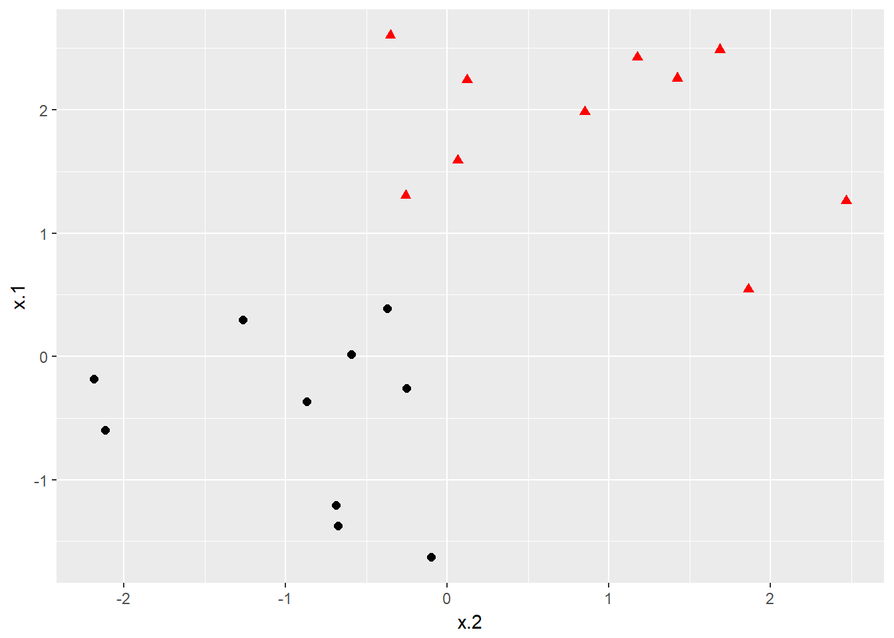
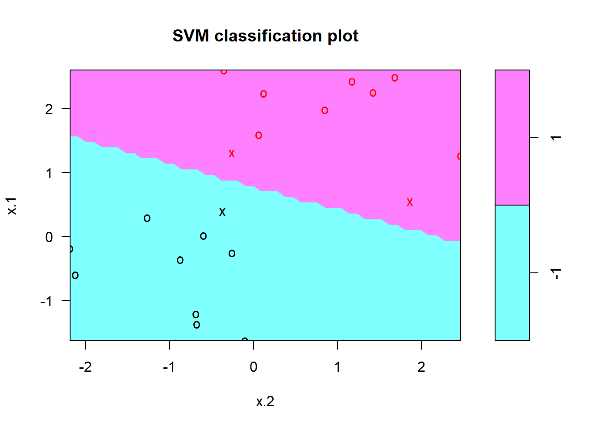
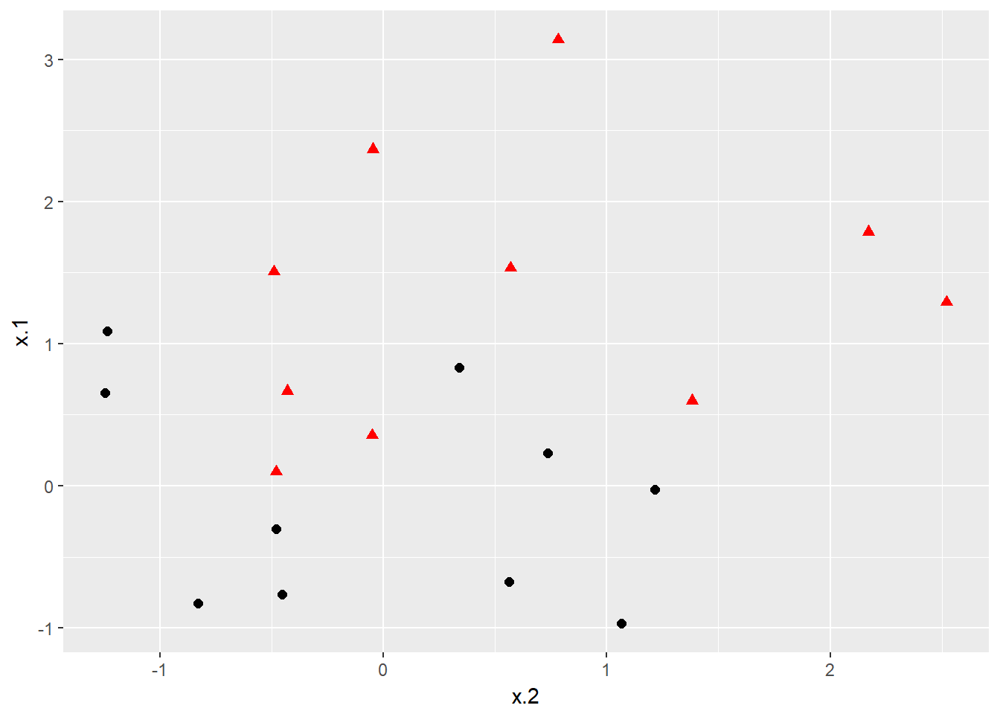
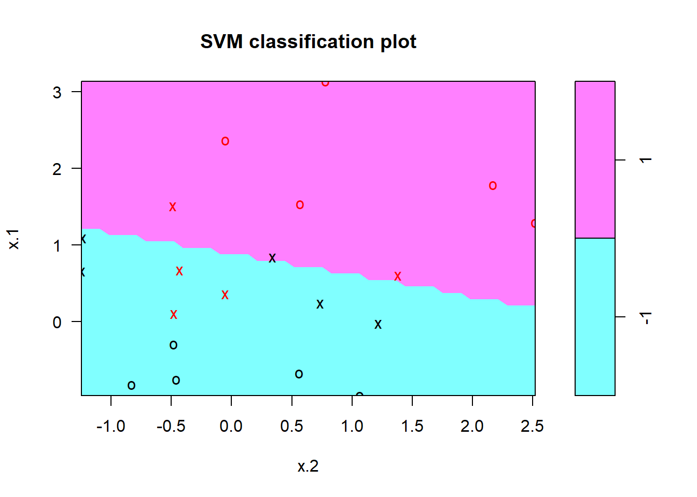
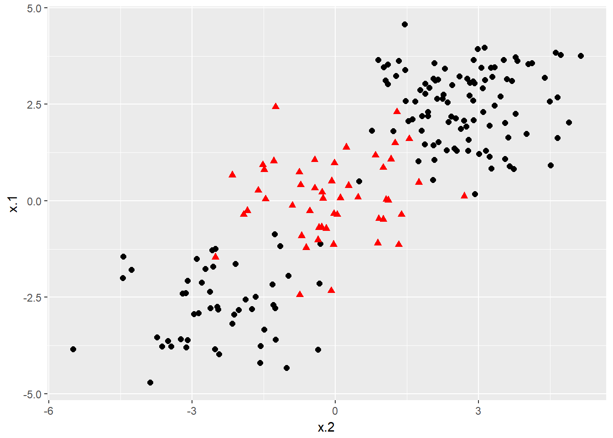
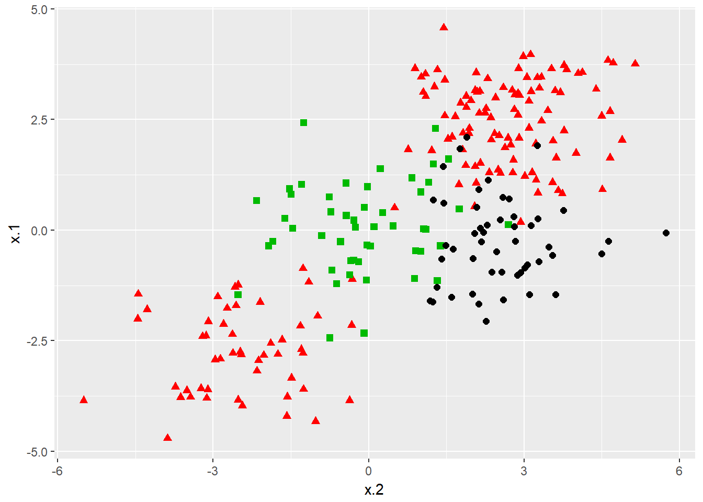
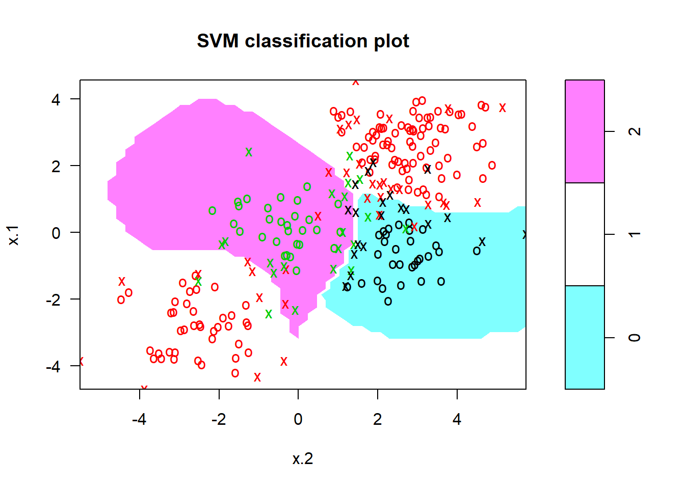

Support Vector Machines
The advent of computers brought on rapid advances in the field of statistical classification, one of which is the Support Vector Machine, or SVM. The goal of an SVM is to take groups of observations and construct boundaries to predict which group future observations belong to based on their measurements. The different groups that must be separated are called “classes”. SVMs can handle any number of classes, as well as observations of any dimension. SVMs can take almost any shape (including linear, radial, and polynomial, among others), and are generally flexible enough to be used in almost any classification endeavor that the user chooses to undertake.
tl;dr
Replication Requirements: What you’ll need to reproduce the analysis in this tutorial
Maximal Margin Classifier: Constructing a classification line for completely separable data
Support Vector Classifiers: Constructing a classification line for data that is not separable
Support Vector Machines: Constructing a classfication boundary, whether linear or nonlinear, for data that may or may not be separable
SVMs for Multiple Classes: SVM techniques for more than 2 classes of observations
Replication Requirements
For this tutorial, we will leverage the tidyverse package to perform data manipulation, the e1071 package to perform calculations related to SVMs, and the ISLR package to load a real world data set to show the functionality of Support Vector Machines. In order to allow for reproducible results, we set the random number generator explicitly.
# set pseudorandom number generator
set.seed(10)
# Attach Packages
library(tidyverse) # data manipulation and visualization
library(e1071) # SVM methodology
library(ISLR) # contains example data set "Khan"## Warning: package 'ISLR' was built under R version 3.4.1The data sets used in the tutorial (with the exception of Khan) will be generated using built-in R commands. The Support Vector Machine methodology is sound for any number of dimensions, but becomes difficult to visualize for more than 2. As previously mentioned, SVMs are robust for any number of classes, but we will stick to no more than 3 for the duration of this tutorial.
Maximal Margin Classifier
If the classes are separable by a linear boundary, we can use a Maximal Margin Classifier to find the classification boundary. To visualize an example of separated data, we generate 40 random observations and assign them to two classes. Upon visual inspection, we can see that infinitely many lines exist that will split the two classes.
# Construct sample data set - completely separated
x <- matrix(rnorm(20*2), ncol = 2)
y <- c(rep(-1,10), rep(1,10))
x[y==1,] <- x[y==1,] + 3/2
dat <- data.frame(x=x, y=as.factor(y))
# Plot data
ggplot(data = dat, aes(x = x.2, y = x.1, color = y, shape = y)) +
geom_point(size = 2) +
scale_color_manual(values=c("#000000", "#FF0000")) +
theme(legend.position = "none")
The goal of the maximal margin classifier is to identify the linear boundary that maximizes the total distance between the line and the closest point in each class. We can use the svm() function in the e1071 package to find this boundary.
# Fit Support Vector Machine model to data set
svmfit <- svm(y~., data = dat, kernel = "linear", cost = 10, scale = FALSE)
# Plot Results
plot(svmfit, dat)
In the plot, points that are represented by an “X” are the support vectors, or the points that directly affect the classification line. The points marked with an “o” are the other points, which don’t affect the calculation of the line. This principle will lay the foundation for support vector machines.
Support Vector Classifiers
As convenient as the maximal marginal classifier is mathematically, most real data sets will not be fully separable by a linear boundary. To handle such data, we must use modified methodology. We simulate a new data set where the classes are more mixed.
# Construct sample data set - not completely separated
x <- matrix(rnorm(20*2), ncol = 2)
y <- c(rep(-1,10), rep(1,10))
x[y==1,] <- x[y==1,] + 1
dat <- data.frame(x=x, y=as.factor(y))
# Plot data set
ggplot(data = dat, aes(x = x.2, y = x.1, color = y, shape = y)) +
geom_point(size = 2) +
scale_color_manual(values=c("#000000", "#FF0000")) +
theme(legend.position = "none")
Whether the data is separable or not, the svm() command syntax is the same. In the case of data that is not linearly separable, however, the cost = argument takes on real importance. This quantifies the penalty associated with having an observation on the wrong side of the classification boundary. We can plot the fit in the same way as the completely separable case.
# Fit Support Vector Machine model to data set
svmfit <- svm(y~., data = dat, kernel = "linear", cost = 10, scale = FALSE)
# Plot Results
plot(svmfit, dat)
But how do we decide how costly these misclassifications are? Instead of specifying a cost up front, we can use the tune() function to test various costs and identify which value produces the best fitting model.
# find optimal cost of misclassification
tune.out <- tune(svm, y~., data = dat, kernel = "linear",
ranges = list(cost = c(0.001, 0.01, 0.1, 1, 5, 10, 100)))
# extract the best model
(bestmod <- tune.out$best.model)##
## Call:
## best.tune(method = svm, train.x = y ~ ., data = dat, ranges = list(cost = c(0.001,
## 0.01, 0.1, 1, 5, 10, 100)), kernel = "linear")
##
##
## Parameters:
## SVM-Type: C-classification
## SVM-Kernel: linear
## cost: 0.1
## gamma: 0.5
##
## Number of Support Vectors: 16For our data set, the optimal cost (from amongst the choices we provided) is calculated to be 0.1, which doesn’t penalize the model much for misclassified observations. Once this model has been identified, we can construct a table of predicted classes against true classes using the predict() command as follows:
# Create a table of misclassified observations
ypred <- predict(bestmod, dat)
(misclass <- table(predict = ypred, truth = dat$y))## truth
## predict -1 1
## -1 9 3
## 1 1 7Using this support vector classifier, 80% of the observations were correctly classified, which matches what we see in the plot. If we wanted to test our classifier more rigorously, we could split our data into training and testing sets and then see how our SVC performed with the observations not used to construct the model. We will use this training-testing method later in this tutorial to validate our SVMs.
Support Vector Machines
Support Vector Classifiers are a subset of the group of classification structures known as Support Vector Machines. Support Vector Machines can construct classification boundaries that are nonlinear in shape. The options for classification structures using the svm() command are linear, polynomial, radial, and sigmoid. To demonstrate a nonlinear classification boundary, we will construct a new data set.
# construct larger random data set
x <- matrix(rnorm(200*2), ncol = 2)
x[1:100,] <- x[1:100,] + 2.5
x[101:150,] <- x[101:150,] - 2.5
y <- c(rep(1,150), rep(2,50))
dat <- data.frame(x=x,y=as.factor(y))
# Plot data
ggplot(data = dat, aes(x = x.2, y = x.1, color = y, shape = y)) +
geom_point(size = 2) +
scale_color_manual(values=c("#000000", "#FF0000")) +
theme(legend.position = "none")
Notice that the data is not linearly separable, and furthermore, isn’t all clustered together in a single group. There are two sections of class 1 observations with a cluster of class 2 observations in between. To demonstrate the effectiveness of SVMs, we’ll take 100 random observations from the set and use them to construct our boundary. We set kernel = "radial" based on the shape of our data and plot the results.
# set pseudorandom number generator
set.seed(123)
# sample training data and fit model
train <- base::sample(200,100, replace = FALSE)
svmfit <- svm(y~., data = dat[train,], kernel = "radial", gamma = 1, cost = 1)
# plot classifier
plot(svmfit, dat)
We see that, at least visually, the SVM does a reasonable job of separating the two classes. To fit the model, we used cost = 1, but as mentioned previously, it isn’t usually obvious which cost will produce the optimal classification boundary. We can use the tune() command to try several different values of cost as well as several different values of \(\gamma\), a scaling parameter uded to fit nonlinear boundaries.
# tune model to find optimal cost, gamma values
tune.out <- tune(svm, y~., data = dat[train,], kernel = "radial",
ranges = list(cost = c(0.1,1,10,100,1000),
gamma = c(0.5,1,2,3,4)))
# show best model
tune.out$best.model##
## Call:
## best.tune(method = svm, train.x = y ~ ., data = dat[train, ],
## ranges = list(cost = c(0.1, 1, 10, 100, 1000), gamma = c(0.5,
## 1, 2, 3, 4)), kernel = "radial")
##
##
## Parameters:
## SVM-Type: C-classification
## SVM-Kernel: radial
## cost: 10
## gamma: 0.5
##
## Number of Support Vectors: 22The model that reduces the error the most in the training data uses a cost of 10 and \(\gamma\) value of 0.5. We can now see how well the SVM performs by predicting the class of the 100 testing observations:
# validate model performance
(valid <- table(true = dat[-train,"y"], pred = predict(tune.out$best.model,
newx = dat[-train,])))## pred
## true 1 2
## 1 58 19
## 2 15 8Our best-fitting model produces 66% accuracy in identifying classes. For such a complicated shape of observations, this performed reasonably well. We can challenge this method further by adding additional classes of observations.
SVMs for Multiple Classes
The procedure does not change for data sets that involve more than two classes of observations. We construct our data set the same way as we have previously, only now specifying three classes instead of two:
# construct data set
x <- rbind(x, matrix(rnorm(50*2), ncol = 2))
y <- c(y, rep(0,50))
x[y==0,2] <- x[y==0,2] + 2.5
dat <- data.frame(x=x, y=as.factor(y))
# plot data set
ggplot(data = dat, aes(x = x.2, y = x.1, color = y, shape = y)) +
geom_point(size = 2) +
scale_color_manual(values=c("#000000","#FF0000","#00BA00")) +
theme(legend.position = "none")
The commands don’t change. We specify a cost and tuning parameter \(\gamma\) and fit a support vector machine. The results and interpretation are similar to two-class classification.
# fit model
svmfit <- svm(y~., data = dat, kernel = "radial", cost = 10, gamma = 1)
# plot results
plot(svmfit, dat)
#construct table
ypred <- predict(svmfit, dat)
(misclass <- table(predict = ypred, truth = dat$y))## truth
## predict 0 1 2
## 0 43 2 3
## 1 5 144 4
## 2 2 4 43As shown in the resulting table, 92% of our training observations were correctly classified. However, since we didn’t break our data into training and testing sets, we didn’t truly validate our results.
Application
The Khan data set contains data on 83 tissue samples with 2308 gene expression measurements on each sample. These were split into 63 training observations and 20 testing observations, and there are four distinct classes in the set. It would be impossible to visualize such data, so we choose the simplest classifier (linear) to construct our model.
# fit model
dat <- data.frame(x = Khan$xtrain, y=as.factor(Khan$ytrain))
(out <- svm(y~., data = dat, kernel = "linear", cost=10))##
## Call:
## svm(formula = y ~ ., data = dat, kernel = "linear", cost = 10)
##
##
## Parameters:
## SVM-Type: C-classification
## SVM-Kernel: linear
## cost: 10
## gamma: 0.0004332756
##
## Number of Support Vectors: 58First of all, we can check how well our model did at classifying the training observations. This is usually high, but again, doesn’t validate the model. If the model doesn’t do a very good job of classifying the training set, it could be a red flag. In our case, all 63 training observations were correctly classified.
# check model performance on training set
table(out$fitted, dat$y)##
## 1 2 3 4
## 1 8 0 0 0
## 2 0 23 0 0
## 3 0 0 12 0
## 4 0 0 0 20To perform validation, we can check how the model performs on the testing set:
# validate model performance
dat.te <- data.frame(x=Khan$xtest, y=as.factor(Khan$ytest))
pred.te <- predict(out, newdata=dat.te)
table(pred.te, dat.te$y)##
## pred.te 1 2 3 4
## 1 3 0 0 0
## 2 0 6 2 0
## 3 0 0 4 0
## 4 0 0 0 5The model correctly identifies 18 of the 20 testing observations. SVMs and the boundaries they impose are more difficult to interpret at higher dimensions, but these results seem to suggest that our model is a good classifier for the gene data.
Copyright © 2016 Skynet, Inc. All rights reserved.